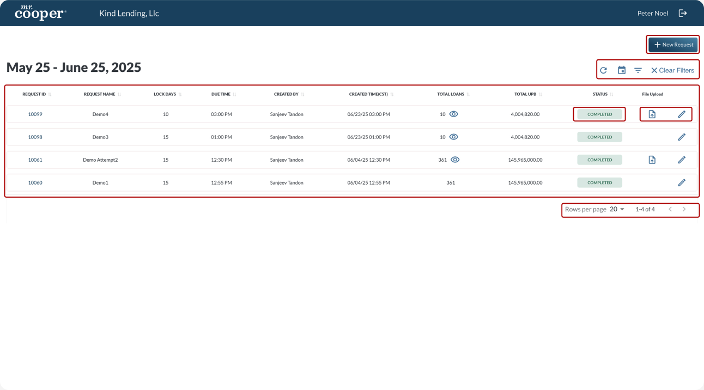
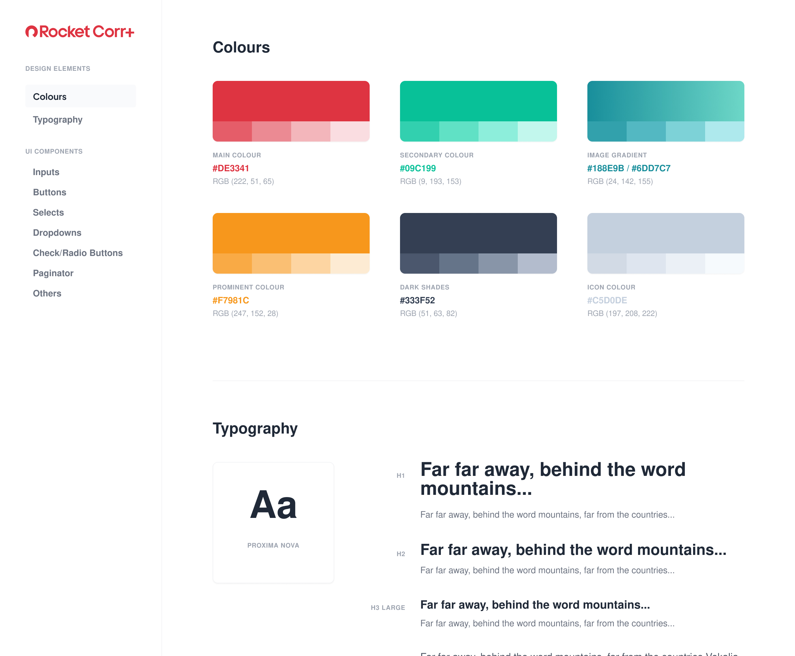
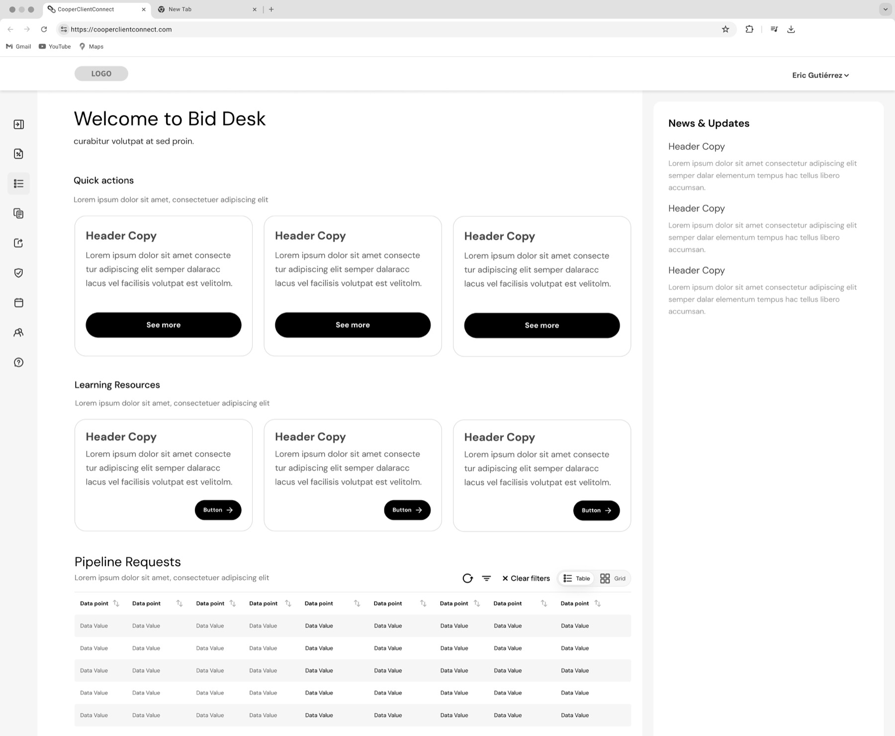
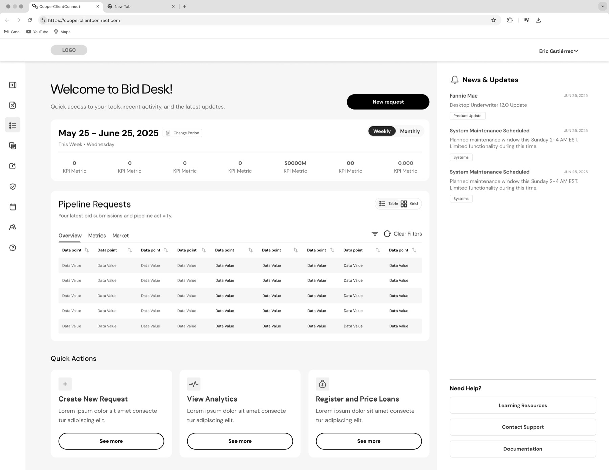
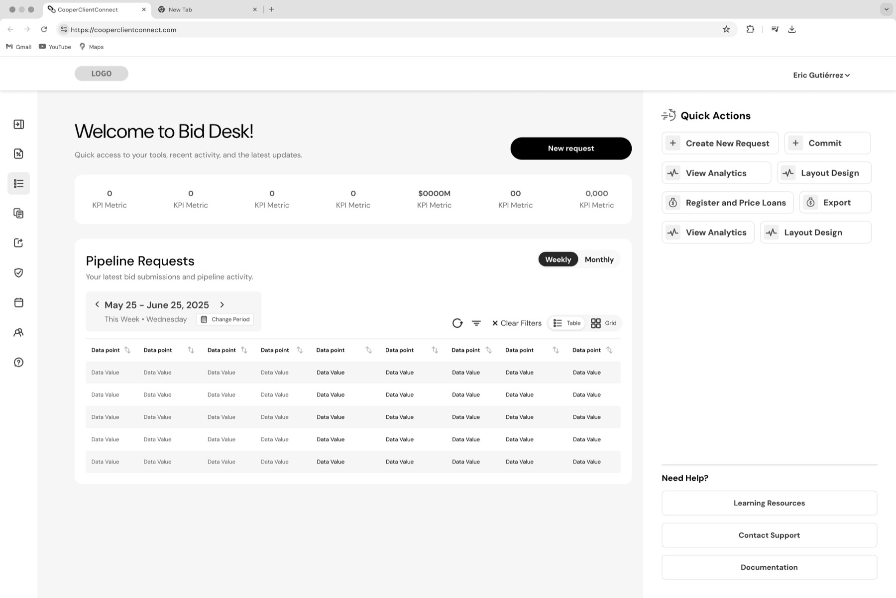
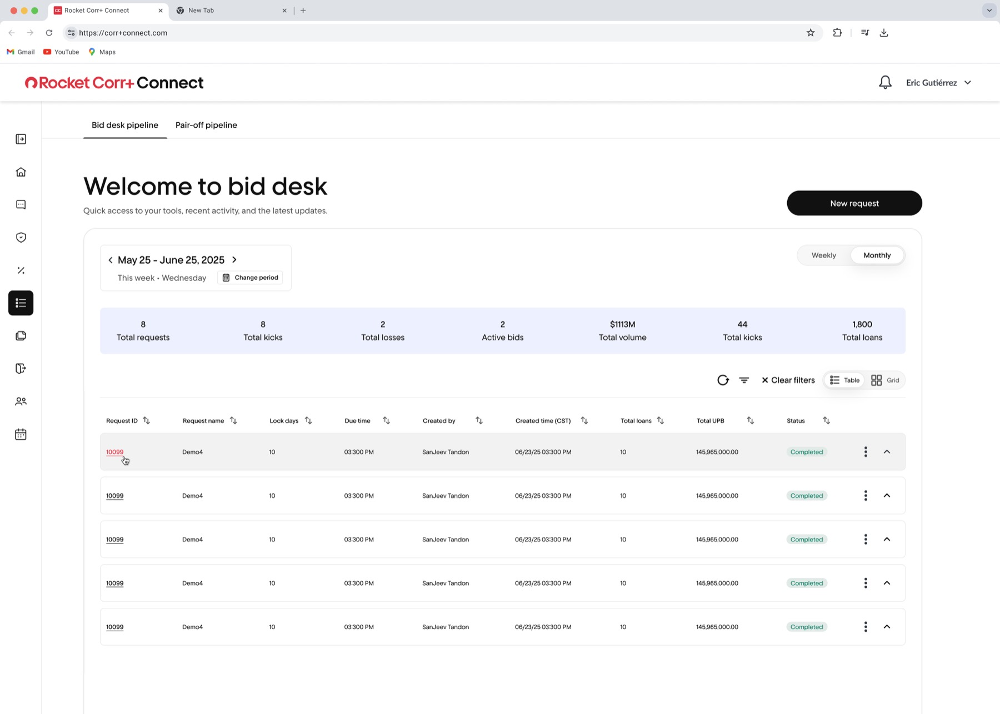
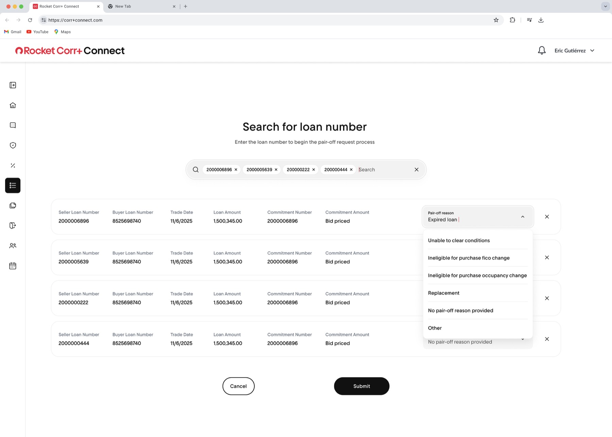
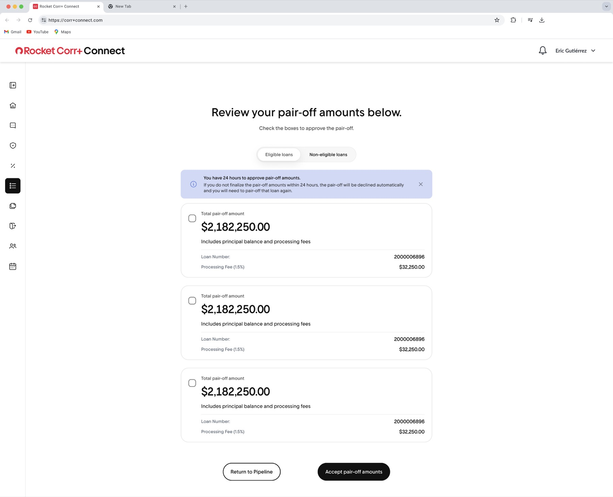
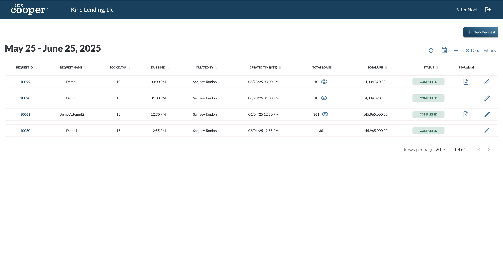
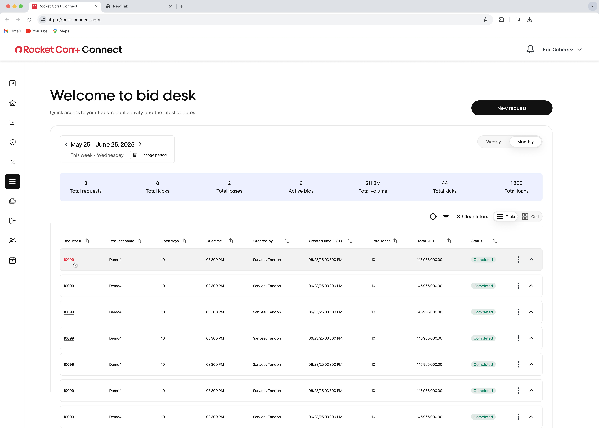

Faster loan review
Improved table organization reduced the effort needed to find, scan, and evaluate loans.

Led the UX/UI redesign of Bid Desk, a loan bidding platform used to view, search, filter, bid on, and pair out loans, aligning the product with Rocket's design system while improving usability, consistency, and task clarity.
As Bid Desk grew in usage and complexity, the platform struggled to keep up with how teams actually worked. Users were managing multiple loans, rates, and scenarios at once—but the interface made it difficult to quickly understand, compare, and act on that information.
Role: Senior UX Designer
Timeline: 4 months
Team: Product, Engineering, Sales stakeholders
Platform: Web (Internal Tool)
Improved data discovery, multi-select bidding, and contextual bulk actions reduced friction across everyday Bid Desk tasks.
Improved table organization reduced the effort needed to find, scan, and evaluate loans.
Enhanced filtering, searching, and sorting helped users narrow large datasets more efficiently.
Clearer loan details, summaries, and bid states helped users confirm decisions before submitting bids.
Users can select and place bids across multiple loans with less effort.
Clearer selection states speed up updates across multiple loans.
understanding employee workflows, pain points, and technical needs to build tools that increase efficiency and adoption,
I began by reviewing the legacy Bid Desk experience, mapping the core workflows users relied on to manage loan requests. Because the product handled dense financial data, the research phase focused on understanding how users reviewed request activity, located specific loan packages, interpreted loan volume, and took actions such as bidding, uploading files, and pairing out/off loans. These insights directly informed the redesign approach.

Here is where I focused on progressive disclosure, clear hierarchy, and repeatable patterns.
My goal was to improve the overall user experience by making the platform more intuitive, efficient, and scalable. I focused on creating clearer workflows, stronger visual hierarchy, and a structure that could better support future Bid Desk needs.
Here is where I focused on progressive disclosure, clear hierarchy, and repeatable patterns.
My approach focused on auditing the existing experience, mapping key workflows, improving the layout structure, redesigning core interactions, applying the Rocket design system, and refining the solution through feedback and iteration.
Reviewed the old interface to identify usability, hierarchy, and consistency issues.
Focused on key actions like reviewing loans, filtering/searching, selecting multiple loans, bidding, and pairing loans out/off.
Created early layout ideas to improve structure, hierarchy, and task flow before moving into high-fidelity design.
Used Rocket's design system and brand guidelines to modernize the interface and create consistency.
Improved filters, table layout, status visibility, bulk actions, and bidding flows.
Used stakeholder or team feedback to refine the experience and make sure the design supported real workflow needs.

Here is where I focused on progressive disclosure, clear hierarchy, and repeatable patterns.
Here is where I focused on progressive disclosure, clear hierarchy, and repeatable patterns.






understanding employee workflows, pain points, and technical needs to build tools that increase efficiency and adoption,


| Area | Before | After |
|---|---|---|
| Page structure | Table-first experience | Dashboard-style workspace |
| Summary Insights | No KPI summary layer | 7 KPI summaries surfaced |
| Data views | Single table view | Table and grid options |
| Time controls | Basic date range and icons | Date module, change period, weekly/monthly toggle |
| Row actions | Multiple visible icons/actions | More centralized zones and improved spacing |
| Visual hierarchy | Minimal separation between content areas | Clear content zones and improved spacing |
| Brand alignment | Legacy Mr.Cooper styling | Rocket Mortgage design system styling |
| Scalability | Minimal separation between content areas | Better foundation for future workflows |
This project reinforced the importance of clear hierarchy, scalable design systems, and confident bulk-action workflows in data-heavy financial tools. By simplifying the structure and aligning the experience with Rocket’s design system, the redesign created a stronger foundation for users to review and manage loans more efficiently.
With more time, I would validate the redesign through usability testing and continue refining the dashboard hierarchy. I would also explore the implementation of quick actions for common tasks like bidding, pairing out loans, and accessing learning tools. To support new users, I would add learning resources, documentation, support, tooltips, and help links to reduce confusion and improve confidence.